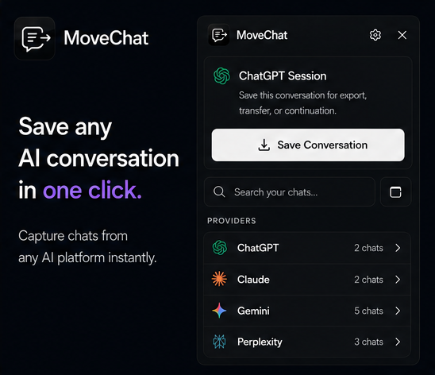

Whether you need to submit research notes for a class, archive customer discovery conversations, or keep a paper trail of technical architecture discussions, turning ChatGPT chats into PDFs is a daily requirement for thousands of people.
The trouble is that OpenAI does not provide a direct Download as PDF button inside single chat windows. You are generally left to choose between quick browser shortcuts that look messy, or cumbersome account exports that dump your entire conversation history in raw JSON format.
Below, we walk through the three most practical ways to save your ChatGPT threads as PDF files, along with the trade-offs of each approach.

Method 1: The Native Browser Print Shortcut (Quickest for Short Chats)
If your chat is relatively short and contains only basic text paragraphs, your browser's built-in print dialog is the fastest zero-install technique.
-
Open the chat in your browser
Navigate to
chatgpt.comand select the thread you want to archive from your sidebar. -
Trigger the Print dialog
Press Ctrl + P on Windows or Linux, or Cmd + P on macOS.
-
Adjust browser print settings
Change the Destination dropdown to Save as PDF. Click More settings and check the box labeled Background graphics. If this option is unchecked, all code block shading and message bubbles will turn blank white.
-
Set Margins to Custom or Minimum
Standard default margins often pinch ChatGPT code blocks horizontally, creating horizontal scroll bars inside static print output. Setting margins to Minimum helps preserve width.
Where Native Browser Print Breaks Down
Standard browser printing treats ChatGPT like an ordinary web document. When a long code block crosses an invisible page line, the browser frequently slices individual lines of code in half vertically. It also includes the OpenAI sidebar, text input box, and user profile icons unless you manually delete those DOM nodes using DevTools.
Method 2: OpenAI Account Data Export (Best for Total Backups)
If your goal is an exhaustive archive of every question and answer you have ever submitted to ChatGPT, OpenAI provides an official data export mechanism in account settings.
- Click your profile picture in the bottom left corner of ChatGPT.
- Select Settings → Data Controls.
- Click Export Data and confirm the prompt.
- OpenAI will send an email containing a download link to a ZIP archive.
The catch: This download contains your whole history inside a file called conversations.json. It does not produce individual, formatted PDF documents. You need to write custom Python scripts or use third-party parsers to isolate a single chat and convert it into a document you can hand to a colleague.
Method 3: Using MoveChat for Clean 1-Click PDF Export
MoveChat is a lightweight, open-source browser extension designed specifically for moving, archiving, and formatting AI chats. It parses the actual message tree in your browser tab, extracts user prompts and assistant replies, and compiles them into a structured document.
-
Install MoveChat
Add MoveChat from the Chrome Web Store or Firefox Add-ons store.
-
Click "Capture this session"
Open the MoveChat icon in your toolbar while viewing any ChatGPT thread. Click Capture this session. The extension reads all messages, code syntax, and attached images instantly.
-
Select "Download as PDF"
Click Download as PDF in the export grid. MoveChat generates a styled document with proper pagination, syntax highlighting, and clean margins.
Save your AI chats cleanly with MoveChat
Free, 100% open source, with zero tracking. Export conversations to PDF, Markdown, and JSON in one click.
Comparison: Print Dialog vs Data Export vs MoveChat
| Feature | Browser Print (Ctrl+P) | OpenAI Data Export | MoveChat Extension |
|---|---|---|---|
| Output Format | Raw JSON ZIP | Clean PDF, MD, JSON | |
| Code Block Formatting | Frequently split or clipped | Raw text inside JSON | Preserved syntax styling |
| Speed | Instant | Minutes to hours (via email) | Instant (1 click) |
| Single Thread Isolation | Yes | No (all or nothing) | Yes |
| Privacy & Telemetry | Local | Processed by OpenAI | 100% local, no servers |
Frequently Asked Questions
Can I save ChatGPT conversations on mobile as PDF?
On iOS Safari or Chrome on Android, you can use the browser's Share sheet, choose Print, and pinch outward on the preview thumbnails to produce a PDF. Formatting issues with code blocks remain identical to desktop browsers.
Does MoveChat send my conversation data to an external server?
No. MoveChat runs entirely inside your browser sandbox. Your conversations, exported PDF bytes, and settings never leave your local machine.
Can I also export to Markdown instead of PDF?
Yes. MoveChat includes one-click export to Markdown (.md) and structured JSON, making it easy to store your conversations in Obsidian or Notion notes.